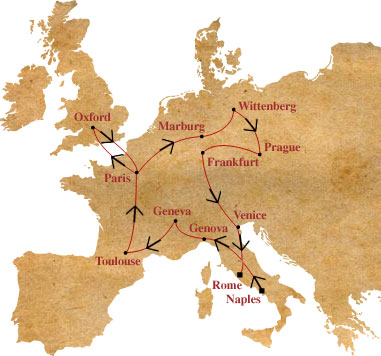

|
|
Giordano Bruno, storia di un filosofo errante |
|
|
Il destino di Giordano Bruno (1548 - 1600),
pensatore tormentato, si inserisce all'interno di un contesto religioso difficile, in cui
la caccia agli eretici è onnipresente e la riflessione scientifico-filosofica è intesa
come al servizio esclusivo della teologia. |
|
Genio visionario, Bruno entra in conflitto
con le religioni cattolica, calvinista e luterana, nonché con umanisti, difensori
dell'aristotelismo, e scienziati, ai quali egli oppone la propria idea dei mondi infiniti. |
|
Rappresentante della filosofia ermetica,
Bruno appartiene inoltre al movimento letterario di ispirazione esoterica e magica
iniziato da Marsilio Ficino (i tre libri del De vita) e continuato da Cornelio Agrippa (La
filosofia occulta o la magia) o da Pico della Mirandola. Il XV secolo vede dunque la
rinascita di Ermes e dei testi antichi, dell'arte talismanica, della magia naturale e del
misticismo della cabala ebraica, in direzione del quale Bruno si orienterà negli ultimi
anni di vita. Gli antichi trattati di magia, tra i quali il Picatrix, hanno grande
popolarità e ispirano i pensatori del Rinascimento che uniscono l'esoterismo alla
filosofia. |
|
Il ritorno dell'occultismo destava grande
preoccupazione nella Chiesa, la quale vedeva il proprio quadro teologico tradizionale
ridursi poco a poco in polvere, nel momento stesso in cui la sua intolleranza nei
confronti delle nuove teorie scientifiche e filosofiche raggiungeva la massima intensità.
Occorre ricordare inoltre l'impulso controriformista che si era diffuso in Europa in
questo periodo, impulso che, per contrastare la massiccia avanzata delle nuove forme di
spiritualità, tentava di ridefinire in modo rigoroso il concetto di dogma. È dunque facile
comprendere come qualsiasi elemento potenzialmente distruttivo nei confronti di quel mondo
in cui la Controriforma stessa tentava di mettere ordine venisse immediatamente tacciato
di eresia. Di conseguenza, l'impulso controriformista tendeva a mettere un freno al
pensiero filosofico, opponendosi ai progressi scientifici non conformi al concetto di
natura espresso nelle Sacre Scritture. |
|
| È all'interno di questo contesto di transizione, a cavallo fra tradizione
cattolica e rinnovamento intellettuale, artistico e scientifico, che Giordano Bruno
impegna tutta la propria vita nel tentativo di fare accettare le proprie idee. Provocatore
suo malgrado, il filosofo scatena turbamenti e sconvolgimenti, tanto che il suo destino
sarà quello di un vagabondo perseguitato e incompreso. Le sue peregrinazioni attraverso
l'Europa sono durate 16 anni prima della fatale conclusione, ossia prima della morte sul
rogo, il 17 febbraio 1600, di questo filosofo apostata. |
inizio pagina |
|
|
|
|
1548 -1576: Giordano Bruno, frate domenicano |
|
|
|
|
Nato
da una modesta famiglia di Nola, Filippo Bruno compie i propri studi a Napoli prima di
entrare, nel 1565, nel convento domenicano di San Domenico Maggiore, dove riceve un
insegnamento di stampo umanistico e familiarizza con la retorica, la dialettica, la
filosofia naturale e la metafisica. |
|
Fin
dal 1566, Bruno comincia ad attirarsi il biasimo dei propri confratelli, i quali lo
accusano di avere sostenuto tesi antitrinitarie in occasione di una discussione contro
l'arianesimo. Ordinato suddiacono, quindi diacono, diviene sacerdote nel 1573 assumendo il
nome di Giordano. Diplomato in teologia, presenta una tesi sul pensiero di San Tommaso
d'Aquino e di Pietro Lombardo nel 1572. Compone, con il titolo de Il Candelaio, una
commedia satirica ambientata nel mondo monastico, oggi perduta. |
|
La
sua grande curiosità nei confronti di tutte le scienze e le filosofie lo conducono a
colmare le "lacune" in campo umanistico grazie allo studio di temi assai
controversi, come l'ermetismo, la magia o la cosmologia. L'interesse per Erasmo, ritenuto
eretico, e la critica rivolta da quest'ultimo al concetto di dogma spingono Bruno a
deporre l'abito ecclesiastico prima di dover affrontare le accuse del frate Domenico
Vita da Montalcino. |
|
Da
Genova a Venezia, passando per Noli, Savona, Torino, Padova e Brescia, Bruno percorre per
due anni il proprio paese natale prima di recarsi in esilio a Chambery, dove rimane per
alcuni mesi presso i frati domenicani rivestendo l'abito, quindi a Ginevra. |
|
|
|
|
|
inizio pagina |
|
|
| 1576 - 1592: 15 anni di peregrinazioni |
|
 |
Pellegrino
suo malgrado, Bruno viaggia attraverso l'Europa e le sue Università, rifuggendo i
climi ostili o i propri nemici,
cercando invano di far accettare le proprie idee.
Ma ovunque, la sua filosofia e il fervore del suo pensiero vengono rifiutati."Chi adocchiato me minaccia ... non
è uno, non son pochi, son molti, son quasi tutti." |
|
A - Ginevra |
Una nuova strada, unita ad una nuova
spiritualità, sembra allora aprirsi di fronte al filosofo. Deposto definitivamente
l'abito monacale, si converte al calvinismo e si iscrive all'Università di Ginevra in
qualità di studente. Segue i corsi di Antoine de La Faye, docente di filosofia che
impartisce lezioni su Aristotele, del quale ben presto denuncia l'incompetenza in un
libretto. Entrato ancora una volta in conflitto con le autorità ginevrine, Bruno viene
arrestato e scomunicato il 6 agosto 1579. |
|
| B - Lione, Tolosa, Parigi |
Passando da Lione, Bruno prosegue verso
Tolosa, dove entra all'Università locale in qualità di docente di astronomia e
filosofia. Qui, entra in contrasto con Francisco Sanchez, filosofo portoghese del
quale denuncia l'approccio empirico, e pubblica la prima opera di mnemotecnica, che attira
l'attenzione di Enrico III. Convocato a Parigi, ottiene la protezione del re e rimane per
5 anni come docente presso il Collège des Lecteurs Royaux (collegio dei reali lettori).
È in questo periodo che il filosofo si consacra completamente all'arte della memoria, in
particolare con l'opera a forte connotazione ermetica De umbris idearum, pubblicata nel
1582 e dedicata ad Enrico III.
Tutto l'insieme di tensioni religiose che si abbatte sul paese gli procura tuttavia
l'animosità dei membri della Lega Santa e dei protestanti. Rifiutando di prendere parte
alla disputa, viene accusato dai propri contemporanei. Di fronte a tale clima di
ostilità, parte per l'Inghilterra accompagnato da una lettera di raccomandazione del re. |
|
| C - Londra e Oxford |
Dopo avere trovato alloggio presso
l'ambasciatore francese Michel de Castelnau nel quartiere di Butcher Row, il filosofo
conduce una vita da gentiluomo fino al momento dell'intervento di fronte ai docenti di
Oxford. George Abbot, membro del Balliol College e che più tardi accuserà il filosofo di
avere plagiato alcune opere di Marsilio Ficino, organizza un dibattito pubblico in
occasione del quale Bruno scandalizza i propri colleghi sostenendo l'eliocentrismo di
Copernico. Scoraggiato, il filosofo reagisce a tale rinnovata ostilità dedicandosi
interamente alla stesura delle proprie opere. Ma il 7 febbraio 1584, durante un'occasione
in cui intravede la possibilità di riavvicinarsi ai propri avversari, viene invece
raggirato da Fulke Greville in occasione di un incontro con due docenti di Oxford,
organizzato a casa dello stesso Greville il mercoledì delle Ceneri. Bruno, lieto di poter
infine esporre la propria dottrina cosmologica, si trova sfortunatamente costretto ad
affrontare gli attacchi di Nundinio e Torquato, che abbandonano ben presto la dimora
dell'ospite lasciandolo privo di interlocutori. |
|
Il soggiorno in Inghilterra è
particolarmente ricco di pubblicazioni. Attaccato a più riprese per le sue idee,
risponderà, contrariato, sistematicamente in forma scritta. Si succedono dunque La
cena delle ceneri, in cui difende la propria versione dell'eliocentrismo
copernicano, De la causa, principio et uno, in cui prende posizione contro
il protestantesimo, De infinito, universo et mondi, in cui espone le proprie
idee sul concetto di universo infinito e sulla molteplicità dei mondi, Spaccio
della bestia trionfante, sorta di riforma morale e religiosa, La cabala del
cavallo pegaseo, sintesi delle sue idee in materia di cosmologia, e infine Degli
eroici furori, incredibile mosaico delle sue aspirazioni filosofiche. |
|
Tornato a Parigi nel 1585, difende 125 tesi
anti-aristoteliche presso il Collegio di Francia provocando il disappunto del pubblico e
la contestazione dell'avvocato Raoul Callier relativa alle "calunnie" divulgate
dal filosofo. Il clima si fa sempre più pericoloso per il Nolano, che perderà l'appoggio
della comunità italiana a causa dell'affare Mordente. Questi, geofisico inventore
del compasso differenziale, accusa Bruno di avere copiato il proprio strumento. Anche il
Re di Francia, che fino ad allora lo aveva protetto, lo abbandona. Privato di qualsiasi
sostegno, Bruno fugge in Germania. |
|
| D - Da Marburg a Francoforte |
Dopo un breve periodo presso l'Università
di Marburg, il cui rettore, Petrus Nigidus, vieta infine l'ingresso al filosofo,
Bruno raggiunge Wittenberg, dove tiene lezioni sulle opere di Aristotele per due anni. Il
suo atteggiamento sempre molto controverso e le sue idee sull'infinità dei mondi gli
procurano l'ostilità dell'astronomo danese Tycho Brahe. |
|
Bruno lascia la Germania per recarsi a
Praga, patria di alchimisti, dove soggiorna per un semestre presso la corte di Rodolfo II,
mecenate di astrologi e alchimisti provenienti da tutta Europa. A tale soggiorno
corrisponde una nuova svolta nel pensiero del filosofo, che si rivolge risolutamente verso
la magia e l'ermetismo. All'epoca, Praga costituiva in effetti il luogo ideale per
l'espressione delle correnti occulte, poiché re Rodolfo nutriva la speranza di trovare la
pietra filosofale circondandosi dei più eminenti studiosi di ermetismo ed esoterismo.
Bruno gli dedica dunque un trattato contro le matematiche, grazie al quale riceve un
piccolo tributo, ma non un impiego. |
|
Bruno si reca quindi nella piccola cittadina
di Helmstedt nel 1588, dove si iscrive all'Accademia Julia. Il filosofo entra ben presto
in contrasto con il pastore e sovrintendente della Chiesa luterana Gilbert Voet.
Subito dopo avere redatto tre trattati di magia, tra cui il De magia, nel
quale viene esposto il metodo secondo il quale è possibile entrare in contatto con i
demoni e con la dimensione magica dell'immaginario, viene nuovamente scomunicato e
costretto a rifugiarsi nel convento delle Carmelitane di Francoforte, nonostante la
notifica di espulsione. |
|
Nel 1591, un nobile veneziano, Giovanni
Mocenigo, lo invita ad insegnargli l'arte magica della mnemotecnica. Dopo alcune
esitazioni, Bruno si reca infine a Venezia, sperando di ottenere la cattedra di
Matematica presso l'Università di Padova. Tali speranze ben presto svaniscono, spingendo
pertanto il filosofo a congedarsi dal proprio ospite e a ripartire alla volta di
Francoforte. Deluso del suo insegnamento e dubbioso in merito all'ortodossia della sua
filosofia, Mocenigo denuncia Bruno all'Inquisizione. Il 23 maggio 1592, il filosofo viene
arrestato e trasferito nella prigione di San Domenico di Castello. |
inizio pagina |
|
|
|
|
1592 - 1600: dal processo alla morte sul rogo |
|
| |
Il processo a Giordano Bruno dura quasi otto
anni, durante i quali si verificano numerosi rovesciamenti di posizioni. L'Inquisizione
gli rimprovera, in un primo momento, i suoi propositi anti-dogmatici che già gli erano
costati l'abito ecclesiastico. Il filosofo, convinto antitrinitario, rifiuta la verginità
di Maria e la transustanziazione. Le considerazioni in materia di cosmologia, il rifiuto
del geocentrismo e l'attrazione per la magia andranno man mano ad amplificare le accuse
rivoltegli. Sarà l'integrità del suo libero pensiero ad essere infine rivalutata. |
|
Sembra che la prima grande accusa a carico
di Bruno sia stata per la sua concezione astronomica, poiché essa non concordava con le
Sacre Scritture, minacciando in tal modo l'equilibrio religioso. Dal momento che tale
concezione stava alla base di tutto il suo schema filosofico, Bruno non poteva abiurare
ciò che, secondo la sua opinione, non aveva legame alcuno con il concetto di dogma. |
|
Occupandosi egli stesso della propria
difesa, il filosofo proclama, rivolgendosi a chi abbia intenzione di ascoltarlo, il
proprio disinteresse per la questione teologica:
"Il contenuto delle mie opere è, in generale, filosofico ed io mi sono sempre
espresso in termini filosofici, seguendo la luce naturale, senza preoccuparmi di ciò che
la fede ci ordina di ammettere". Il 30 luglio 1592, modifica alcuni termini,
dei quali riconosce l'ambiguità, prima che il caso venga trasferito a Roma su richiesta
del Grande Inquisitore, il cardinale S. Severina. |
|
Le trattative avvengono tra Roma e Venezia,
che non intende realmente accordare il trasferimento. Nel febbraio 1593, Bruno viene
incarcerato presso le prigioni del Santo Ufficio. Le testimonianze schiaccianti dei suoi
compagni di detenzione, il frate cappuccino Celestino da Verona, Matteo De
Silvestris da Orio e Francesco Graziano da Udine, consolidano le accuse del
Tribunale dell'Inquisizione. In particolare, sarebbe stato riferito che Bruno vedeva nei
miracoli di Mosè l'abilità di un grande mago, la cui arte era stata tramandata dagli
antichi Egizi. La posizione del filosofo si fa quindi sempre più delicata. |
|
Tuttavia, il processo si trascina per altri
due anni prima che venga presa la decisione di studiare attentamente le opere di Bruno,
censurate e poi bruciate in Piazza San Pietro. Dal carcere, Bruno prosegue la redazione
delle proprie memorie per difendersi e presenta l'ultima apologia di se stesso il 20
dicembre 1594 di fronte al Santo Ufficio. |
|
Il processo viene interrotto per 6 mesi
mentre il Nolano continua a difendere attivamente la propria teoria dei mondi infiniti,
dichiarandosi talora pronto ad abiurare, talora fedele alle proprie idee. |
|
Il cardinale Bellarmino redige dunque
l'elenco delle teorie giudicate eretiche, di fronte al quale Bruno ha ancora alcuni
momenti di esitazione prima di rifiutarsi categoricamente di abbandonare la propria
dottrina: "Non devo né voglio pentirmi, non ho materia di cui pentirmi, e non
so di che cosa mi debba pentire". Le 8 proposizioni che il filosofo rifiuta
di abiurare sono le seguenti: |
|
|
1 -
L'affermazione di "due principi reali ed eterni dell'esistenza, anima del mondo e
materia universale, da cui derivano gli esseri". |
2 - La
dottrina dell'infinità dell'universo e degli innumerevoli mondi, opposta all'idea di
Creazione: "Chi nega l'effetto infinito, nega la potenza infinita". |
3 -
L'idea che l'intera realtà risieda nell'anima del mondo eterna e infinita, compreso il
corpo: "Non vi è realtà che non sia accompagnata da uno spirito e da una
intelligenza". |
4 - La
tesi in base alla quale "Non vi è mutazione all'interno della sostanza",
poiché essa è eterna e non genera alcunché, bensì si trsforma. |
5 -
L'idea del movimento terrestre che non si oppone, secondo l'opinione del filosofo, alle
Sacre Scritture, la cui espressione, volgarizzata per i fedeli, non si rivolge agli
eruditi. |
6 - La
definizione degli astri come "messaggeri e interpreti della volontà divina". |
7 -
L'attribuzione di un'anima "non solamente sensitiva, bensì anche intellettiva"
alla terra. |
8 -
L'opposizione alla dottrina di San Tommaso sull'anima, "realtà spirituale"
imprigionata nel corpo e non considerata come la forma del corpo umano. |
|
|
| Nessuna delle
ultime accuse rivoltegli fa riferimento alle considerazioni magiche del filosofo.
Tuttavia, l'Inquisizione gli rimprovererà la svolta in direzione dell'ermetismo e della
cabala, accusandolo di stregoneria per avere scritto nell'opera Degli eroici furori che
"Più possono far gli maghi per mezzo della fede, che gli medici per via de la
verità" e per avere riconosciuto la magia come benefica e lecita.
Di che cosa la
Chiesa aveva così tanta paura da desiderare di mettere a tacere un filosofo avanguardista
come Bruno? La documentazione insufficiente non consente di ricostruire per intero il
processo, né di risalire all'esatto elenco delle accuse.
In ogni caso, Papa
Clemente VIII dichiara l'accusato "eretico, impenitente e recidivo" il 20
gennaio 1600. Dopo averlo consegnato al braccio secolare, il cardinale Madruzzi pronuncia
la sentenza l'8 febbraio. Giordano Bruno viene arso vivo presso il Campo dei Fiori a Roma
una decina di giorni dopo. Ribelle fino all'ultimo istante, distoglie lo sguardo dalla
croce del Cristo prima di spirare tra le fiamme. |
|
|
 |
|
|
Epilogo |
|
A partire
dall'anno 1603, tutte le opere di Bruno scompaiono dalla circolazione sotto la minaccia
della Chiesa. Le teorie del filosofo "eretico, cospiratore, ateo" vengono messe
all'Indice e ricompariranno solo un secolo più tardi per iniziativa di Newton.
Il libero pensiero
di Bruno ha continuato a scatenare polemiche fino a quando la sua riabilitazione non
verrà messa all'ordine del giorno in Vaticano e il suo carnefice, il cardinale
Bellarmino, verrà canonizzato il 29 giugno 1930.
Attualmente, la
Chiesa continua a rifiutare di riconoscere le tesi del filosofo, deplorando tuttavia
"l'uso della forza esercitata nei suoi confronti". |
|
|
 |
Inaugurata
il 24 giugno 1899 nonostante l'opposizione di Papa Leone XIII, la statua di Giordano Bruno
è tuttora presente quale elemento ornamentale nel Campo dei Fiori a Roma. |
|
|
|
inizio pagina |
|
|
|
|
|